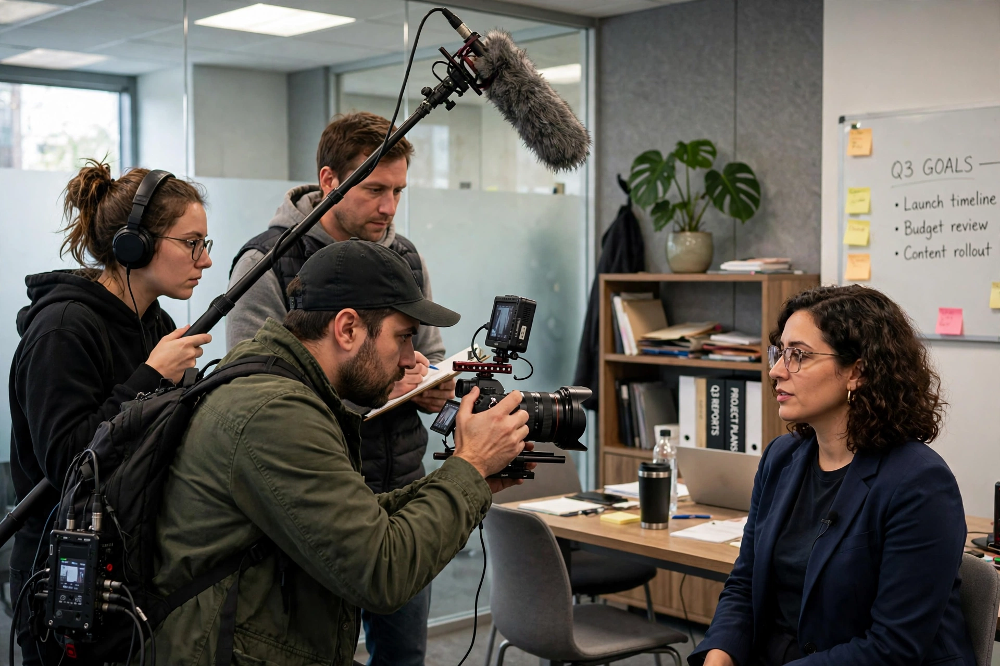

| Mockumentary | |
|---|---|
 | |
| Genre | Comedy, satire, parody |
| Format | Film and television styled as documentary |
| Notable examples | This Is Spinal Tap (1984); The Office; Borat (2006); What We Do in the Shadows |
A mockumentary (a portmanteau of mock and documentary) is a type of film or television show depicting fictional events but presented as a documentary, usually for comic effect. Mockumentaries imitate the conventions of documentary filmmaking — talking-head interviews, handheld camerawork, voice-over narration, archival footage — while their subjects are invented, using deadpan realism to heighten the humour or satire.
Precursors include Orson Welles's 1938 radio drama The War of the Worlds (presented partly as news) and Luis Buñuel's pseudo-ethnographic Land Without Bread (1933). Peter Watkins's The War Game (1965) and Woody Allen's Take the Money and Run (1969) and Zelig (1983) developed the form. Rob Reiner's This Is Spinal Tap (1984) — a portrait of a fictional heavy-metal band — popularised the genre and made director Christopher Guest its leading practitioner with Waiting for Guffman (1996), Best in Show (2000), and A Mighty Wind (2003).
The British sitcom The Office (2001), created by Ricky Gervais and Stephen Merchant, and its many international adaptations brought the mockumentary format to mainstream television, followed by series such as Parks and Recreation, Modern Family, Abbott Elementary, and What We Do in the Shadows. Sacha Baron Cohen's Borat (2006) blended the fictional documentary frame with real, unsuspecting participants.
Mockumentaries typically rely on improvisation, direct-to-camera confessionals, awkward pauses, and the gap between characters' self-image and reality. The form has also been used for drama and horror, as in found-footage films.
See also: Documentary film; Pseudo-documentary; This Is Spinal Tap; The Office; Found footage (film technique).